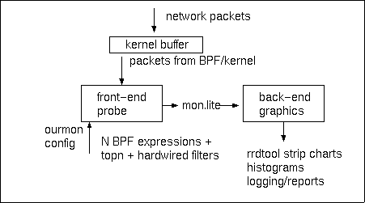

In this document we give an introduction and overview of Ourmon and it's individual filters.
Ourmon is an open-source tool for network monitoring and anomaly detection. It runs on FreeBSD, Linux, and Solaris. Goals include:
The front-end packet capture engine has three forms of filters: 1. hardwired (programmed in C), 2. user-programmable using the BSD Berkeley Packet Filter (BPF), and 3. top N style filters that produce sorted lists of largest flows or interesting IP hosts. There are 5 top N filters at present. User-programmed BPF filters or BPF filter sets may be added to the system by the user, and allow considerable customization of the system. For example, a user might choose to create one or more graphs that watch local subnets, local hosts, or local ports on local hosts. Hardwired, and BPF filters use the RRDTOOL package for the display and baselining of data. Top N filters use a supplied histogram-drawing program and log one week's worth of data for later analysis.
The back-end system displays network information on the web using either:
Recently ourmon has been modified to enhance its abilities to detect network anomalies associated with various forms of attacks including TCP syn scanning, UDP scanning, DOS attacks, and distributed zombie attacks. A number of features have been added, some of which use the BPF to give us an overall network view of TCP and ICMP control data, some of which use new top N filters to show information about particular host IP systems engaged in scanning, and some of which provide RRDTOOL graphs for carefully chosen and proven useful metadata. We will go over these particular filters below in a section of their own entitled anomaly detection filters.

The ourmon architectural flow diagram is intended to give a rough
analysis of data flow through the ourmon system.
For network setup, the ourmon "probe" box is assumed to be directly
connected to an Ethernet switch. The switch must have port mirroring
turned on so that promiscuous mode filtering on the ourmon front-end "probe" can see all
desired network packets passing through the Ethernet switch. Network packets
are passed to the NIC card of the front-end probe, and in FreeBSD are stored
in the BPF buffer. (In Linux, the details are different, but there is still
a kernel buffer associated with packet flow to the front-end application).
Ourmon architecturally consists of two parts, known as the front-end probe, written in C, and the back-end graphics engine, mostly written in Perl. The front-end is a form of network analyzer that reads network packets from an Ethernet interface out of a kernel buffer, and runs each packet through a set of filters. (It should be noted that the front-end program is also called ourmon). For each filter, byte counts or packet counts are periodically stored in an output report file, and that information is passed to the back-end. The back-end then takes the output of the front-end and creates web-based graphics. It may optionally log top N flows to ourmon logs (that are similar to syslog in style) and produce some daily "top of the top" reports on the logs.
The front-end uses the Berkeley Packet Filter and pcap library to fetch packets from a promiscuous mode Ethernet device. The filters used are specified in an input configuration file, called ourmon.conf . One may add or remove filters as desired. 68 bytes maximum per packet (as with tcpdump) are captured. Thus only the protocol parts of packets are actually captured via the BPF. Ourmon at this time does not examine L7 data. This allows (L2) Ethernet and (L3) IP addresses, and L4 ports to be examined. This is an important trade-off. As a consequence, because it does not look at layer 7 data, ourmon can deal with higher speed flows when compared to an IDS signature-based tool like Snort. On the other hand, one can only use it to analyze up through layer 4, and no layer 7 analysis is currently possible. From a security point of view, it could easily make sense to run both ourmon and Snort side by side (but on different hosts please). This is because Snort might miss a new attack, like a high-speed DOS attack. Ourmon would show that something abnormal happened simply because it does NOT understand the data. For example, the pkts graph could show an unusual number of counted packets and/or drops. On the other hand, ourmon is certainly not going to see a known attack signature in the data part of a UDP packet.
Internally the front-end program looks at the Ethernet header, IP source and destination addresses, IP next protocol, and TCP and UDP ports, or in the case of ICMP, major and minor ICMP codes. Each configured-in filter is executed per packet. Thus if there are 5 filters in use, they will be executed in order, one after the other on each packet. In general, the average filter will count bytes or packets and represents this with integer counters. Top N filters keep hash lists of flows or IP addresses associated with counters. At the end of the sample period (every thirty seconds) the output is written out in a very simple format, called the mon.lite file, counters are reinitialized to zero and dynamically allocated lists are also freed. See mon.lite for an example. This file is then processed by the back-end to create various kinds of graphics available from a web server. The "mon.lite" file may be viewed as a summarization of a great deal of packet information into a small intermediate and condensed form.
The back-end is Perl-based. The back-end consists of several programs. The most important backend program is called: omupdate.pl. It creates, and updates graphs with the help of the RRDTOOL library. For top N display, it also employs a tool called drawtopn to draw histograms. There are some additional sorting and logging functions that will not be covered here.
Omupdate.pl both creates and updates per-filter RRD (RRDTOOL) databases, depending on which set of filters you wish to use. Omupdate.pl must be driven by a crontab entry (and is typically called twice a minute). It takes the current copy of the mon.lite file, processes it a bit, and stores information in various per-filter rrds (RRDTOOL log databases), as well as creates the current set of RRD-based graphics. It is possible, and probably a good idea, to run the front-end and back-end on two separate hosts. How "mon.lite" is copied from the front-end to the back-end is an "out of band" problem, and is not solved by the ourmon system. But it is an easy thing to do and ssh or the wget application can be used to solve the problem. One very nice side effect of using RRDTOOL is that all the RRD filters, including BPF-based filters, produce a year's worth of baseline data in graphical format. Thus per-filter, one gets current (daily), weekly, monthly, and yearly pictures.
In the next two sections, we will discuss most of the individual filters in detail.
Please note that ourmon as a system supports three kinds of filters:
1. hardwired filters, that are done in C code. These have
names and specific functions. There are not many of them.
2. user-programmable BPF filters. Ourmon supports arbitrary user-space
(as opposed to kernel-space) Berkeley Packet Filter (BPF)-based filters.
One can have 1-6 BPF-filters per RRDTOOL graph (more than 6 produces a cluttered
graph, and in fact 6 is probably too many). These filters use
the same language specification mechanism used by tcpdump.
It is currently possible to have up to six BPF expressions per RRDTOOL style graph.
At the time of writing the PSU ourmon front-end system has 60 BPF expressions in it total
and in general does not lose packets.
3. top N filter mechanisms that produce various kinds of top N information
including a traditional flow monitors. Other top N lists exist focused
on anomaly detection. These lists typically show information associated with
individual IP source addresses.
In the next section we begin a detailed discussion of the various filters supplied by ourmon. Note that filters have names; for example, the filter that displays different IP level protocols is called "fixed_ipproto" . Filter names are important because they tie the inputs and outputs of the ourmon system together. Filters are named in the ourmon.conf file, and output appropriate to that name appears in the mon.lite file, and again appears in rrdtool libraries, log files, or png images created by the back end. It should also be pointed out that data associated with a filter presented by the back end, is usually interpreted as packets or bytes, and may therefore be presented as bits/sec, or pkts/sec. In some cases, a data item may be presented as data/period. Period means the ourmon sample period of 30 seconds.
Now we will discuss the filters in detail.
For example, you can always choose to lose a filter. The top N flow filter without a doubt,
is likely the biggest CPU consumer. It may also be better to have ourmon running with
only one Ethernet device as opposed to two (even though two is possible).
This may be the case due to BPF buffering schemes. Note that the pkts
(caught and dropped) counters are zeroed out (in SNMP terms, pkts is a GAUGE),
at the mon.lite write period time. All of the individual ourmon
filters are currently
zeroed out at mon.lite output time. Thus the counters start over
from zero for the next round (and at the moment they are more or
less all GAUGEs anyway).
Typical "mon.lite" output is as follows:
The mon.lite output looks like this:
The mon.lite output looks like this:
In the ourmon.conf file, BPF filters default to displaying bits per second
(bpf-bytes is used above to force this mode). The config file
has two modes which can be toggled on and off between filter sets (but not
inside a filter set) using the following two commands:
The above "ports" filter set gives us one RRDTOOL graph with 5 lines in it.
The name of the graph (BPF filter set) is "ports".
The BPF tag called "bpf" indicates to ourmon that we are starting
a new BPF filter set graph. "ports" is the name and label of the entire graph
and is used in the backend for creating unique filenames both in the web and
rrddata directories. This first bpf line also includes the first line label "ssh" and a
BPF filter specification associated with that line label,
"tcp port 22", designed to capture secure-shell traffic.
The subsequent "bpf-next" lines add additional lines
to the graph for p2p traffic (kazaa, bigtorrent, edonkey, gnutella, and the like --
by definition p2p apps can use whatever port they want, so this isn't perfect,
it's just an informed guess), the web, ftp, and email.
Each bpf-next line has a line label and filter specification.
A BPF graph is either terminated by another filter or by a BPF-noxtra label
which tells ourmon to not collect and graph bytes that fail to
match any of the BPF filter specifications in this graph. One
may choose to have remaining bytes shown in the final "xtra" graph,
or choose to ignore them (which means xtra is *still* shown in the graphs but has a zero
value as nothing is ever stored in its counter).
The supplied ourmon.conf file has many examples of BPF filters, and you
should make your own. For example, you could graph subnet traffic for
3 subnets, 10.0.1.0/16, 10.0.2.0/16, and 10.0.3.0/16 as follows:
The front-end ourmon program performs a hash function, and creates
a dynamic hash list of flows at runtime. At report time,
it sorts the list with quicksort, and writes out the
top N total IP "flows" (src to destination), top N TCP, top N UDP, and top N ICMP flows.
Note that the numbers are simply 30 second
byte counts represented as bits/sec.
The drawtopn program is used to create png histograms
for the results. In addition, logging is done for the four flow
types in separate logging files (this is true for all top N filters).
(These syslog-style logs are available for analysis by the administrator,
but they are not available on the web).
In addition "top of top" reports
are generated for the topn_ip, topn_udp, and topn_icmp filters,
on an hourly or daily basis for a week. The sorting functionality
provided allows one to see the top flows over a period of time.
Top of top reports are also created for topn_ip, topn_udp, and topn_icmp
that report on the biggest IP source and destination addresses flow generators for these
three flow types.
The mon.lite output is as follows:
There are a couple of important design ideas here driving this work.
One is simply the observation that it can be useful to look at network
control data to observe a baseline and then detect anomalies in that baseline.
There is in general much LESS network control data than data itself (one hopes).
There are less ICMP error messages, than UDP data (usually). There
are less TCP control packets in terms of SYNS/FINS/RESETS compared to data itself.
As two more concrete examples of this notion, one would expect that
TCP SYNS might somehow be related graphically to TCP FINS. Large
numbers of SYNS that have nothing to do with the FIN count thus
indicate that something abnormal is happening. One can also look
at ICMP error data, and see that for example, large numbers of ICMP
host unreachables are being returned because of an active UDP
scanning system. Second-order data may also be of interest from
the viewpoint of network control. For example, instead of focusing
on individual top network flows, we can focus on the overall count
of network flows. PSU has on the order of 1000 ICMP flows per
second. 100000 ICMP flows per second would then indicate that
something was very wrong. (This actually happened due to an outbreak
of the Welchia/Nachi worm on campus in Fall 2003).
We also are in the process of a long-term experiment using
various kinds of weights to detect scanners. There are three
new top N list mechanisms that in some cases use weights
to try and detect scanning systems, and in some cases simply
sort on integer counts. We have a top N syn list that currently
does both of these things. It sorts on the top N ip src sending
TCP syn packets, and at the same time, produces various metrics
that for example tell us the percentage of TCP control packets compared to
the overall percentage of TCP packets sent and received by
that host during the sample period. We call this weight the
work weight . The work weight appears
to be very useful as it allows us to rule out most P2P applications
that often also send large numbers of TCP SYNS during the sample period,
but in fact, generate less TCP SYNS + FINS + RESETS / total pkt count
than most SYN scanning worms. The top N syn mechanism
also produces several other outputs including the tworm graph ,
which represents a total count of anomalous ip sources in terms of SYN counts,
and thus allows one to see distributed attacks occuring in parallel,
tcpworm.txt report which can be viewed via several different outputs most
notably via the so-called
port signature report
.
Both of these topn syn list outputs are produced as a side effect
of a weight metric where we only capture ip sources from the syn tuple
when they satisfy the following worm metric :
In other new top N filters, we also
count the total number of ICMP error packets sent back to a host,
and a weighted measure of UDP errors as well.
We also have a conventional IP scan catcher that sorts on the top N IP
source addresses with the most unique destination IP addresses. This scan
filter also produces graphs that show the mapping of an IP source
to N L4 TCP or UDP destination ports.
This work is "not done" and is only preliminary. We hope to improve it over time.
Ourmon if so configured stores a TCP syn tuple with various counters
that look at the two-way nature of TCP traffic from an IP source address.
This syn tuple includes information about SYNS sent by an ip source, the total number
of SYNS+ACK packets sent by an ip source, FINS returned to that ip source,
RESETS returned, ICMP errors returned, total pkts sent from the IP source, total
pkts returned to the IP source, and a novel destination port sampling scheme.
The port sampling scheme stores the first N TCP destination ports seen associated
with SYNs and stores packet counts for SYN packets only sent to those ports.
This is a sampling scheme as only the first N ports seen are stored. Not all destination
ports are stored. The SYN+ACK count packets are only those packets from a given ip source that are sent
as the second packet of the TCP 3-way handshake. In TCP state machine terms, these
packets represent a service on a host. Thus it is fair to say that a percent score
here of 100% means a host is a server.
As one example, the topn_syn list shows individual IP source addresses sending the most TCP syns
in a period.
There are actually six outputs currently produced by the topn_syn list tuple:
Two major weight functions are used in various places above. These are called
the work weight and the worm weight respectively.
The work weight approximates the percentage of TCP control packets captured divided
by the total number of packets sent both ways. The work weight for each ip source is:
The front-end collects a topn syn list which may of course have 1000s of "syn flows" in it.
It sorts the syn list twice, once for the topn_syn report, and once for the second
output file now produced by the ourmon front, which is the tcpworm.txt file in raw form.
(Raw form means it is not yet processed for human readability which is done by the back-end).
The information given in the tcpworm.txt file consists of that set of ip source addresses
showing up with more syns than fins returned to them. The metric used there is the worm weight. At this point
the worm weight is computed by saying
Let us first look at the setup in the ourmon.conf file and then we will consider the
results in more detail:
The first command
topn_syn turns on the basic topn_syn graph.
The argument to topn_syn (60) specifies how many hosts
you want to capture in terms of pictures. This argument should have the value 10, 20, 30.. to 100
maximum. 60 will produce six histogram graphs with the top 60 "syn" producing systems shown in two
graphs with 10 ip source addresses per graph.
topn_syn_wormfile turns on the tworm RRDTOOL graph output and also the tcpworm.txt report.
In other words, output based on the worm metric is produced. There are actually
two front-end outputs including the tworm graph, which graphs integer counts showing
the number of external ip sources and internal ip sources appearing in the tcpworm.txt file,
and the tcpworm.txt file itself, which like the mon.lite file is passed to the back-end
for further processing. Note that we assume you will use this function, and it is probably not wise to turn
it off.
The second argument to topn_syn_wormfile is a directory path which specifies
where to place the tcpworm.txt report in the front-end file system.
The administrator must arrange that the tcpworm.txt file will be copied to the back-end,
and further processed by shellscripts produced in the configuration process. Tcpworm.txt
is the rough output that is further processed by the back-end and becomes the port signature report,
and other outputs when processed by the back-end.
We will discuss these reports more below. So tcpworm.txt is a rich source of information and at this time there
are a number of back-end reports based on its data.
topn_syn_homeip specifies what you consider to be the "internal" subnet used for "us" in the tworm.html output.
This allows the front-end to decide what is "us" versus "them" in terms of the tworm RRDTOOL graph.
The first argument is a network IP and the second argument is a netmask.
Finally tworm_weight can be used to specify a value ranging from 0..100 percent that is used to filter
the number of hosts shown in the tworm RRDTOOL graph. 80 is probably a reasonable number here as in
our experience hosts with a higher value are very likely to be worm/viruses, although worm/viruses can
appear with a lower weight. For example a common attack against one of the SQL-slammer ports (1433)
may actually result in two-way data exchange. This is because SQL servers are returning Layer 7 data that
is basically saying: "the password guess is wrong". As a result, the work metric for an attacking IP source
may be lower if data (albeit negative data) is being returned by the attacked host.
If this switch is not used, the default filter weight is 0%. This means no filtering is done.
There is at this time no way to filter the portreport itself or the tcpworm.txt file as an input.
Finally note that the tcpworm.txt file if used, is logged in the back-end logs directory. It also
may be analyzed with the bin/tcpworm.pl script which can be asked to do reverse DNS lookup,
and provides the same weight measure used elsewhere with the syn list mechanism.
The topn_syn
graph shows syns, fins, resets, and the work weight metric
for individual IP source addresses sorted by the IP source sending
the most syns in the sample period. The topn_syn back-end graph information per ip source address
might be presented as follows for two ip addresses 10.0.0.1 and 10.0.0.2.
The IP address is the IP source address for the SYNS being sent. The SYN count is given
below the other information and in the first case above is 4779 meaning 4779 syns in the sample period.
f stands for "FIN". r stands for "RESET". These
represent TCP FIN and RESET counts sent back to the IP source address.
t represents the total TCP packets sent to and from the address
in question. The work weight is also given as a percent with one flag, which may be 'w' or 'W'.
As a visual aid, if the percent is greater than 90%, we give it a "W" flag.
If the percent is between 50..90%, we give it
a 'w' flag.
With the work weight, false positives are possible. In general, one
should use tcpdump or some other scanner to capture packets
from a believed suspicious IP host and verify its behavior.
Although false positives are possible,
we have observed the following about the work weight system:
The above weighting system is also used in the port signature report and its companion
tcpworm.txt output file which has more details in it per ip source.
It is also possible to run the back-end tcpworm.pl application on any raw tcpworm.txt
file to reconstruct the port signature report for post attack log analysis.
mon.lite output is as follows for topn_syn:
mon.lite output for tworm appears as follows:
The portreport may be regarded as a simple summary of the more verbose tcpworm.txt report.
It is called the "portreport" because it includes a small sample of TCP destination
ports from the IP source in question. Thus it gives a set of destination ports
which we call a "port signature". This port signature may allow you to see a new virus
at work and often some virus/worms have distinctive "port signatures". For example, see
ports 5554 and 9898 as found below in a small example of real port report output.
This is a signature of the dabber worm.
Here we only discuss the portreport or "port signature" report.
The port signature report has three sections. The first section
is the port signature report itself which is is sorted in ascending order in terms of IP source
address. The second section is based on a daily "db" file database that tells you
if the current set of destination ports seen are "new" in this port sample, or "old".
New simply means so far today we have not seen that particular set of ports before. "old" means
we have seen that particular port set before. For example, note the destination ports
given below (5554, 9898). This set might have appeared in previous portsignature reports
for the day, or it might be new for this particular report. New port signatures are
stored in the event log as well (see below for more information). The final chunk
of information in the port signature report is simply a simple condensed help reminder
in case you forget what the port signature fields mean or the meaning of the EWORM flags used
as well.
With the main port signature, we sort first by IP source address from small to large.
Thus one can thus easily note attacks that come from the same IP source "locale",
including attacks from the same IP subnet possibly synchronized with some bot mechanism.
Each line represents culled information for one IP source deemed anomalous in terms
of its SYN output. Let's look at some examples:
The flags field attempts to convey whether the "work" in question is two-way or simply
one way from the IP source and provides details about the nature of TCP control data as well.
The total set of flags is as follows with a rough explanation given for each:
Worms commonly produce WORM or WOM, although if a network administrator chooses too, he or she
might produce more RESETS from local routers and/or hosts, and this could be useful in detection
of scans. The flags field is explained in more detail in the tcpworm.txt
The work weight as before roughly represents the number of TCP control packets divided by all
TCP packets sent to and received from the IP source address in question. 100% means more or less
all control and no data. From experience we suggest that work weights in the range of 80% or more
should be deemed highly suspicious. Although there are rare cases of noisy clients that
for some reason cannot reach their server OR email servers that are trying to reply to spam
(which will always fail). We have observed over many months that in general anything
with a weight over 80% is "anomalous" and in most cases not benign.
Low work weights may mean you have a noisy web server
that is sending large numbers of small packets per connection to a client. On the other hand,
low work weights may be associated with P2P applications, Layer 7 password attacks on web servers
(port 80 as a destination port may indeed be significant, but it could be an attack or
a benign web client use), or irc server bots with a high rate of JOIN message churn.
The latter very well may be a trojan.
The SA/S field expresses the total percent (0..100) of SYN+ACK packets typically sent as the
second packet of the TCP 3-way initial handshake divided by the total number of SYN
packets sent from the IP source in question. There are three possible thresholds here.
0 means the system in question is a client. 100 means the system in question is a server.
A number in-between (which is commonly found with P2P systems or irc bots) shows that the system
in question has both server and client functionality. One should correlate this information
with the port signature information, in particular when the sample space of 10 possible
ports is filled up. A low work weight, 100% for SA/S and 10 out of 10 ports in the port signature
typically indicates a server (which is typically either a web server or a server undergoing a L7
attack returning error messages like "404 not found", or "password failed").
The dst/total field gives some measure of how well the port signature mechanism worked.
The dst number represents the total number of packets stored as counts in the port signature tuple.
The port signature tuple samples the first 10 destination ports seen coming from the IP source
in question. Each tuple consists of a TCP destination port, and the packet count associated
with that destination port. The total field consists of the total number of packets coming
from that IP source. If the dst value is much less than the total and all 10 port tuple
buckets are full, then this is a good indication that the port signature field failed to
catch much in terms of its samples. These two numbers are not expressed as a percent because
the dst value gives you some idea of how many packets per sample period are being
sent by the IP source in question. For example if you see that the work weight is 100%,
and that packets are being sent to say 5554, 9898 as above, you can then estimate from the numbers
given above that probably 3 syns per second are being sent.
The port signature field itself results from a possible sample size of 10 TCP destination ports
captured for the IP source. The destination port is the first field in the port 2-tuple.
Note that in order to help spot similar attacks, the ports are sorted in ascending order
from left to right.
We can sometimes tell by the port number itself that an attack is occuring. For example,
in general one should be suspicious of any of the following Microsoft ports in the port map:
135-139, 445, 1433. In typical use one does not see large discrepencies in ordinary
use of the Microsoft File Share distributed file system or with the use of a SQL server.
The work weight here simply does not matter, and in fact a low
work weight is a bad sign because it means hosts are your site may be responding at Layer 7
to attacks. Ports 80 and 443 of course may or may not represent attacks on web servers.
A low work weight with port 80 might mean that attacks are being launched at a web server
and it is returned failure messages at Layer 7. It might also mean that a web server
is sending lots of small connections back to a client and in that case is benign.
Certain other port combinations represent well-known viruses as (5554, 9898) is an example.
If you see new port signatures, it can be useful to search google for suspicious port combinations
(as well as the dshield site and web pages offered up by various anti-virus vendors).
The event log is rotated on a daily basis by the back-end and approximately one week worth
of daily event logs are kept. See the main page (index.html) under "Weekly Event Logs"
for a week's worth of event logs.
Currently the batch report gives the total number of instances for the IP source in question,
and also presents a small sample (5) of port signatures. The port signatures presented here
are of the form [port_destination, packet count]. As this is a batch report, reverse DNS lookup is
performed.
topn_icmperror generates two separate top N lists, one for ICMP errors associated
with individual IP source addresses, and an additional list
for UDP generated IP source addresses.
In the mon.lite file, these lists are shown as follows:
For the udperror_list, the tuple means: (ip source, a computed weight:
UDP pkts sent, UDP pkts returned, ICMP unreachables returned, ICMP Ping packets sent,
and a port count plus port signature tuple). The port count indicates how
many port signatures are in the port tuple, 1 to 10 total. Each tuple
consists of a L4 UDP destination port followed by a packet count.
Port signatures are a sampling technique; that is, we do not try to
capture all ports, only the first N seen.
The port signature is thus roughly similar to the TCP portreport.txt port
signature tuple.
Here the weight is used for sorting. The weight is basically:
In the graphical representation for the icmperror_list
we use a flag-based system as follows:
In the graphical representation for the udperror_list,
we sort on the computed weight as mentioned before.
The weight function is an attempt to make scanners stand out
due to errors.
The flag system in this case is as follows:
In addition to the histogram graphics which do not allow room for the UDP
port signature tuple data, an ASCII report called the udp port signature report
is generated by the back-end. The report presents the per IP source information
in a form similar to the TCP port signature report. Port packet tuples
are of the form [destination port, frequency]. In other words, packet counts
are not given here, but instead are given as a percent of the total packets
captured in the port signature sample. For example, one might see the following:
The topn_port_scans filter presents three separate graphs, but in general,
looks at single IP sources
sending packets to many unique L4 TCP and UDP destination ports.
We sort on the maximum L4 destination ports. There are three graphs because
the ip_portscan graph counts both TCP and UDP ports (and does not discriminate between the two),
while the tcp_portscan and udp_portscan graphs only show TCP and UDP destinations respectively.
Thus both topn_scans and topn_port_scans are 1-N in terms of their basic mapping.
The ourmon.conf configuration is setup as follows:
Therefore the graph representation is not any different from the mon.lite outputs.
We simply present an IP source address, with its respective destination
count. Results are sorted in order of unique destinations.
It should be pointed out that information here may be correlated
with information shown in the UDP errors or TCP syn top N mechanisms.
The top N flow mechanism may also be of use for network security
in terms of anomaly detection. There are fundamentally two
different sets of graphs shown here. First of all, it has proven
very useful to use a RRDTOOL graph to display the count of
all four kinds of flows. (The count is the tag that follows
the flow tag in the mon.lite file. It is the count of unique
flows of that type, of which only the top N are provided
as tuples in the mon.lite output).
We call this the "flow_count" graph.
This graph shows small and large attacks and classifies them
as to whether they are TCP, UDP, or ICMP in origin. It shows
the attacks simply because "scanning" means variation in IP destination,
and/or L4 ports (or ICMP major/minor numbers) which are classified as separate flows as a result,
even though they may be flows of one packet only. This graph
has proved to be a particular good indicator of network-wide scanning
attacks, including single instances of worms like the UDP slammer.
The companion graph, "topnstat.html", show the counts
of inserts in the flow hash list, which again are due to separate flows.
Inserts result in malloc(3) calls and this graph also tracks attacks
fairly well. (However long term it may prove to be redundant
to the flow count graph).
In addition, it should go be pointed out that the ICMP top N flow graph
may be useful. In particular, the ICMP flow "top of top" report
has a tendency to reveal hosts that are engaged in long term scanning
simply because they pile up extraordinary amounts of errors. (It may
also show a long term ping of course). These
scanners may be both TCP or UDP-based. In the TCP case, errors
may occur due to administrative prohibited ICMP unreachables,
ICMP redirects, or TTL exceeded errors. In the UDP case, UDP scanners,
may in addition pile up ICMP port unreachable errors over time.
As a result, the top of the top report here is useful for detecting
scanning systems as well. ICMP unreachables, TTL exceeded, and
routing redirects may be treated with suspicion.
pkts: caught:9440 : drops:0: caught2:0 : drop2:0
fixed_ipproto
The fixed_ipproto filter is very simple. It simply
counts up TCP versus UDP versus ICMP bits, dumping any other IP protocol
into the "xtra" bin.
Typical "mon.lite" output is as follows:
fixed_ipproto: tcp:67402888 : udp:30976940 : icmp:23158 : xtra:47623:
A sneaky technique is used in the mon.lite file in that in some cases
mon.lite counts bytes per period, and omupdate.pl converts bytes to bits per second.
fixed_tcp3
The fixed_tcp3 filter accepts two TCP dst OR src ports. It then
counts packets displaying bits/sec with src/dst port1 versus port2 versus any
remainder packets, dumping any others
into the "xtra" bin. Note that xtra is all other bits, not just
TCP (this may be a silly idea).
Ourmon (the front-end) takes a configuration
file. The entry for this filter might take the following form:
fixed_tcp3 119 80
What this means is that we are interested in capturing USENET NEWS (port 119)
and HTTP traffic (port 80). As supplied, this filter captures email (25) versus
web (80) traffic.
Typical "mon.lite" output is as follows:
fixed_tcp3: 119:39908731 : 80:11033941 : xtra:47506497:
fixed_cast
The fixed_cast filter is performed at the Ethernet header
layer, not the IP layer, if and only if the supplied BPF device
is an Ethernet device. It displays bits/sec. It classifies packets as Ethernet multicast,
Ethernet unicast, and Ethernet broadcast, based on the Ethernet
destination address. Note that this filter is potentially useful
for observing possible broadcast storms, whatever the cause, or multicast
routing meltdowns. At this time, assuming Ethernet inputs,
"xtra" packets would appear to be packets that are too short, although
this subject deserves investigation.
The configuration file looks as follows:
fixed_cast 127.0.0.0 255.0.0.0
This is because we require an IP net/mask pair, just in case
one of the input interfaces is not Ethernet-based (the localhost device).
These addresses are ignored if Ethernet is used, but they must
still be supplied (just leave them alone in the supplied configuration).
fixed_cast: mcast:191214 : ucast:98257955 : bcast:0 : xtra:1440:
fixed_size
The fixed_size filter is performed at the Ethernet header
layer, not the IP layer, if and only if the supplied BPF device
is an Ethernet device. It displays pkts/sec. This filter counts packets within
four fixed byte bucket sizes, where the packet is <= 100 bytes (tiny), <= 500 (small), <= 1000 (medium),
or <= 1500 bytes (big). These packets may include errors.
The configuration file looks as follows:
fixed_size
fixed_size: tiny:51732 : small:13795 : med:13544 : big:32876:
user designed RRDTOOL-based BPF graphs
The user-mode BPF filters are a powerful part of
ourmon and allow programmable back-end RRD-based graphs.
They allow the user to design his or her own RRDTOOL graphs.
For example, we might have the following BPF filter set
in our ourmon.conf
filter specification file:
bpf-bytes
bpf "ports" "ssh" "tcp port 22"
bpf-next "p2p" "port 1214 or port 6881 or port 4662 or port 6346 or port 6257 or
port 6699 or port 6257"
bpf-next "web" "tcp port 80 or tcp port 443"
bpf-next "ftp" "tcp port 20 or tcp port 21"
bpf-next "email" "tcp port 25"
bpf-noxtra
bpf-bytes
bpf-packets
These two commands cause an entire BPF filter set to
produce either bits/sec or pkts/sec.
bpf-bytes
bpf "subnets1" "net1" "net 10.0.1.0/16"
bpf-next "net2" "net 10.0.2.0/16"
bpf-next "net3" "net 10.0.3.0/16"
bpf-noxtra
Or you can easily make up graphs that might watch a local server using expressions like:
bpf "hosts" "hostA" "host 10.0.0.1"
bpf-next "email" "host 10.0.0.1 and port 25"
bpf-next "web" "host 10.0.0.1 and (tcp port 80 or tcp port 443)"
bpf-noxtra
See the INSTALL file for more information on BPF graph customization.
topn flow graphs
The following links show the outputs for the various topn flow graphs:
topn_ip
topn_tcp
topn_udp
topn_icmp
The topn_ip filter provides a traditional top N flow
point of view for IP (any IP flow), TCP, UPD, and ICMP flows.
It shows the top N flows in bits/sec. An IP flow is defined
as a 5 tuple having this form: (IP src, IP dst, next IP protocol, L4 src port,
L4 dst port). TCP and UDP flows of course do not have the next IP protocol field.
ICMP flows display major and minor ICMP codes as opposed to L4 ports.
The ICMP major value is displayed as the L4 "source port", that is,
it is put on the left-hand side of the flow.
The ICMP minor value is displayed as the L4 "source port" on the right-hand
side of the flow.
topn_ip : 6954 : 131.252.208.43.65529->131.252.120.170.119(tcp): 18320510 :
128.223.220.30.40165->131.252.208.43.119(tcp): ETC ...
topn_tcp : 5596 : 131.252.208.43.65529->131.252.120.170.119: 18320510 : ETC...
topn_udp : 1257 : 209.70.46.6.27968->131.252.77.153.6974: 269300 : ETC ...
topn_icmp: 2: 131.252.3.1.0->131.252.2.1.0: 5234: 131.252.2.1.8->131.252.3.1.0: 5234: ETC ...
Note that the number following the topn_ip tag value above is the count of
distinct IP flows seen during the sample period. This is not the same as the top N flows
shown as tuples in the mon.lite file. It is a count of the unique flows seen during
the sample period, all of which have been stored in the hash list itself. But of course,
not all of them are printed out if the number of flows exceeds the top N value (currently
hardwired to 9, but this will change in the next release).
The flow count itself is currently
graphed in an RRDTOOL-style graph as it is very useful for anomaly detection.
See below in the anomaly detection section for more information on that graph.
topn ports graph
The following links show the output for the topn ports graph:
topn_tcp_port
topn_udp_port
The topn_port
filter displays the top N ports used in TCP and UDP
flows. The top N ports are sorted by packet byte count and expressed in bits/sec.
Up to 100 ports may be displayed with 10 ports per graph
for each TCP and UDP graph (which are separate).
The back-end topn_tcp_port graph has the following format in its graphs:
port/L4 src_count/L4 dst_count
mbits
The top port is displayed followed by the L4 src_count and
dst_count in the "legend" or top part of the label on the graph.
The port value may be either a src or destination L4 port.
For each port below the legend, we present bits/sec which is used for sorting the tuples.
(Effectively the port is the key, and the bit count is used for sorting).
The src_count/dst_count denote how many times the L4 port was a
source/destination *port*. Thus it may be possible to determine that a particular
port is only being used as a destination (or source) port.
Also the src and dst counter is a packet counter, not a byte counter.
The entry for this filter in the configuration file may be as follows:
topn_port 20
This indicates how many top port tuples should be written to the mon.lite file.
mon.lite output is as follows:
tcp_ports: 8472 : 80:56316509:49409:39209 : 6881:20155127:13459:13166 : ETC...
udp_ports: 2237 : 49156:3834617:3693:2758 : 49302:3834617:2758:3693 : ETC...
The number value followed the filter tag in the mon.lite output (tcp_ports : number : ...)
represents the number of distinct port tuples seen during the sample period.
N (e.g., 20) 4-tuples follow with the tuple format: (port, byte count,
L4 src port packet count, L4 dst port packet count). omupdate.pl rearranges this information
into a tuple more suitable for display.
Anomaly Detection
Ourmon provides a good number of anomaly detection filters using both
supplied BPF filters, top N filters, and a few carefully chosen meta-data
RRDTOOL-based graphs. We will discuss the top N filters here first,
including some interesting features, and then go on to the supplied BPF
filters. It should be pointed out that in general the BPF filters
look at the big picture. For example, the TCP control BPF filter set
shows the overall number of TCP SYNS, FINS, and RESETS in a network.
On the other hand, the top N TCP syn filter shows the top IP hosts
sending out TCP SYNS. The former gives you a network-wide picture.
The latter helps show individual hosts that may be taking part
in an attack (or running gnutella).
TCP SYNS sent - TCP FINS returned > 20.
This mechanism seems to do a good
job of showing distributed zombie attacks simply because the number
of hosts matching the SYNS - FINS metric increases over some normal
bound by a significant number. The metric can be viewed as a low-pass
filter that leaves out "normal" applications that typically produce
roughly equivalent amounts of SYNS and FINS in a sample period. We
have also done some normalization experiments and can state that
unusual numbers of TCP SYNS aimed at TCP ports 445 and 139 do not
occur with normal Microsoft file sharing.
TCP Syn List Overview
The following links provide outputs for information derived from the topn tcp syn list:
topn_syn
tworm
the port signature report
analyzed tcpworm.txt report
the event log
hourly port signature analysis report
In this section we discuss the TCP syn list tuple and various outputs associated with it.
We will first present a general overview ot the TCP syn list mechanism, then give
it configuration, and finally discuss each output presented above in turn.
1. the topn_syn list,
2. the tworm RRDTOOL graph,
3. the tcpworm.txt output report,
4. the port signature report.
5. the ourmon event log.
6. the port signature hourly summary batch reports.
Only the first two are included
in version 2.3, and the latter are new features to be included in
the next release.
SYNS sent + FINS returned + RESETS returned / total 2-way pkts.
Typical benign hosts score a work weight of 0%. 100% means all control and no data and may
be deemed truly "anomalous". Of course an anomaly may represent a client that has no server.
However in many months, we have seen a handful of cases of such anomalies that were not worms,
and 1000s of cases that were worms. More details on the work weight are given below
when we talk about the port signature report.
SYNS - FINS > 20.
If this weight is satisfied, an ip source
tuple is added to the collection in the tcpworm.txt file. Note that this is a different
view of the original syn list data when compared to the topn syn list itself. The topn syn list
in the mon.lite file represents a sort of the syn list and gives us the top N syn sending systems. The tcpworm.txt
file gives us the complete set of ip sources where there were more SYNS than FINS by some number N.
As a result, the top N syn list is bounded as of course it is a top N list. The tcpworm.txt list is not bounded.
However typically barring large distributed attacks, it is far smaller than the total number of IP sources
in the complete topn N syn tuple list.
TCP Syn list ourmon.conf configuration
topn_syn 60
topn_syn_wormfile /home/mrourmon/tmp
topn_syn_homeip 10.1.0.0 255.255.0.0
tworm_weight 80
TCP syn list outputs -
topn_syn graph
10.0.0.1 f: 193: r: 247 t: 7254 72%:w
4779
10.0.0.2 f: 0: r: 20 t: 2035 100%:W
2015
syn_list: 10338 : 10.1.245.25:3380:0:6:4:3380:10:10:1:445,3380 next tuple etc.
Note that the raw syn tuple is the same in both the mon.lite topn syn list and in
the tcpworm.txt raw format file, both produced by the front-end.
The first number after the syn_list tag is the total number of syn entries in the hash list.
It is followed by the specified number of top N syn tuples (60 say in our example).
The syn tuple, gives (IP src, syn count, syn+ack count, fin count, reset count, total sent, total
returned packets, icmp errors returned, number of syn ports sampled, and then two-tuples
that make up the port signature. Each tuple in the port signature is of the form (dst port,
packet count). The packet count here tells us that some number of packets including SYNS
and ordinary non-SYN packets were sent by the ip source in question to the L4 destination port.
TCP syn list outputs -
The tworm graph
The tworm graph attempts to capture the number of "wormy" hosts according to hosts
put in tcpworm.txt at one time. Spikes in this curve may correspond to automated distributed
bot attacks which may be performing a DOS attack or simply scanning for exploits in parallel.
By default the tworm count information counts all IP sources appearing in the tcpworm.txt
file and classifies them as to whether or not they appear to be from the internal network,
or from an external network. (If internal versus external doesn't make sense, best to do something
like make the internal network 10.0.0.0 with netmask 255.0.0.0, thus making all IPs external).
The mon.lite config variable
tworm_weight 80
can be used to filter the tworm count by the work metric. Thus one can approximate
the number of "real" worms as opposed to noisy P2P hosts or noisy web servers.
tworm: 9: 3: 6:
This tuple is placed in the mon.lite file and processed by omupdate.pl in the backend. This produces
the tworm RRDTOOL graph. The three numbers in turn represent:
1. a total count of "worms" (by default
the count here is the number of ip hosts found in the tcpworm.txt file.
2. the total count of systems in the home system that appear in the tcpworm.txt file.
3. the total count of external systems not in the home subnet.
We have observed external attacks in the 1000s made on PSU. These attacks are real
and this mechanism is very useful.
TCP syn list outputs -
the port signature report
The 2.4 ourmon system presents two versions of the front-end tcpworm.txt
file called "tcpworm.txt" and "portreport.txt" respectively. These files
represent different views of the TCP syn tuple information. (The back-end
tcpworm.txt report actually includes the portreport.txt information as well,
but for reasons of quick web lookup, the portreport is broken out into a separate report
file.) Both files are updated every thirty seconds but as they are ASCII outputs,
you must hit "reload" yourself on your web client.
ip src: flags work: SA/S: dst/total: port signature(dst port, frequency)
10.82.196.58 (WOM) 100: 0: 107/107 [5554,40][9898,59])
192.168.245.29 (O) 6: 0: 277/411 [6880,0][6881,42][6883,6][13847,23][... more]
The ip source address is given, followed respectively by the flags, work, SA/S,
dst/total and port signature tuple fields.
E - An anomalous amount of ICMP errors are being returned to the IP source.
W - The work weight is greater than or equal to 90%. A W means the IP source
is highly suspicious.
w - The work weight is greater than or equal to 50% but less than 90%.
O - very few fins are being returned.
R - TCP resets are being returned.
M - no TCP packets are being returned to the IP src in question from receivers.
So for example, M here means there is no 2-way exchange of data.
10.82.196.58 (WOM) 100: 0: 107/107 [5554,40][9898,59])
For example [5554,40] means destination port 5554 was being scanned. The second field in
the port 2-tuple gives the overall percent or frequency of packets for that port in the total number
of sampled ports. In this case 40% of the total port count of packets were aimed at port 5554,
and 59% were aimed at port 9898. (For the actual numbers look in tcpworm.txt).
It should be noted that this is only a sample. It is not unusual to
see all 10 port tuples "full" of something that seems to be evenly distributed at 10%.
Such occurances are often due to web-based "noisy" client/server relationships and may be
benign. However in some cases this may represent a remote scanner that is simply walking the port space.
Scanners may be spotted by looking in the event log as their port signatures will be "new"
and will change over time. (Of course they may also show up in the top N scanner part of
ourmon as well).
TCP syn list outputs -
the tcpworm report
The tcpworm report is essentially an expanded "translated" version of the raw tcpworm.txt file.
It is sorted by the syn list; that is IP sources with more syns will appear before
IP sources with less syns. We may divide it up into three parts: 1. per IP source statistics,
which include all the information the front-end has gathered about a specific IP source, 2. various
summary statistics., and 3. the port signature report, which is also included in here. The port signature
report is included so that one can use a text editor and simply pattern-match back and forth
to learn more details about IP sources in the port signature report deemed of interest.
TCP syn list outputs -
the event log
The event log is a daily log that is intended to hold two sources of information.
1. new port signatures, where new means a TCP port signature that has not been observed
since midnight of the current day.
2. Anything deemed an interesting single event by either the front-end or the back-end.
For example this includes ourmon front-end reboot messages and will eventually
include trigger events when that facility comes on-line.
New port signatures are stored in a db database that is turned over every night at midnight.
Thus port signatures are deemed "new" only since midnight. New port signatures are put
in the event log and have the form:
Tue Nov 2 08:00:29 PST 2004: new worm signature from:192.168.186.238 [5554][9898][16881]
Only ports (and not percentages or packet counts) are stored in either the database or the
event log port signature entries based on the database.
TCP syn list outputs -
batch port signature reports
The ourmon back-end generates an hourly report that is a summarization of the TCP portreport.
The summarization uses a weight supplied in the back-end that averages all instances of
the TCP work weight found so far during the day. Only IP sources with all
tuples averaging at least equal to or above the supplied weight are shown in the summarization.
The goal is to leave out sporadic weights (of say email servers) where once in a while an IP source
will have a high work weight, but generally does not have a high work weight. We suggest
that the filter weight used here be at least 80% (the default) or higher. At install time,
the configure script will prompt the administrator for a "batch port signature report weight".
(Note: PSU has two instances of this report currently, one intended for PSU internal traffic,
and one for all IP sources).
ICMP error report (UDP too)
The following links show various outputs associated with the topn icmperror list:
topn_icmperror
topn_udperror
udp port signature report
The icmperror_list top n mechanism is specified in
the ourmon.conf file as follows:
topn_icmperror 20
10, 20, 30 ... 100 individual IP hosts may be specified with 10 outputs
per picture in units of 10.
icmperror_list: 20779 : 10.0.0.10:984:0:4:984:984:0:0: 10.0.0.2:125:5416:3:128:106:0:19: ETC.
udperror_list: 20779 : 4.242.216.65:578:17:0:17:0:1:137,17,: ETC.
As usual, the number of list entries in the hash list follows the tag.
For the icmperror_list, tuples are as follows: (ip src address: icmp total error
count: tcp pkt count: udp pkt count: ping pkt count: icmp unreachable count:
icmp redirect count: icmp ttl exceeded count). This means that
for a given IP source address, we show the total number of ICMP errors,
where errors are the sum of ICMP unreachables, redirects, and TTL exceeded
packets returned to that IP src during the sample period. We also
attempt to give clues as to whether or not the system is sending
TCP packets, UDP packets, or ICMP ping packets. The list is
sorted by the total number of ICMP errors.
UDP pkts sent - UDP packets received * ICMP errors.
The ICMP
errors consist of ICMP unreachables, redirects, and TTL exceeded pkts
sent back to the IP source in question plus any ICMP PING packets sent by the IP source.
ICMP (port) unreachables weigh slightly more and will raise the weight.
T: TCP packets sent by an IP source.
U: UDP packets sent by an IP source.
P: ICMP echo request packets sent by an IP source.
Un: ICMP unreachable packets sent back to that IP source.
R: ICMP redirect packets sent back to that IP source.
X: ICMP ttl eXceeded packets sent back to that IP source.
We only show a flag:count if the result for the IP source address
is non-zero. The list again is sorted by the total number of ICMP
errors.
U: UDP packets sent by an IP source.
R: UDP packets sent back to that IP source.
Un: total ICMP unreachable errors sent back to that IP source.
P: total ICMP PING packets sent from the IP source.
As usual, the weight is shown below the label that starts
with the IP source address. Tags are shown only if they have non-zero
counts.
ip src: weight: udp_sent: udp_recv: redirect: ping: port_count: port_sig[port, count]
10.150.27.31 7672 138 0 28 0 1: [137,100]
This is likely a worm. 138 UDP packets were sent and none were returned. 28 ICMP unreachables were
returned. The only port used is a Microsoft file share port, and we see that all 138 packets
were aimed at port 137. Ports 137 and 1434 (SQL) should be viewed with suspicion.
topn scans
The following links show output associated with the topn scan lists:
ip_scans
ip_portscan
tcp_portscan
udp_portscan
The topn_scans filter (producing graph ip_scan above)
counts packets sent from a unique IP source to multiple IP destination addresses
during the sample period. Therefore we can say it is 1-N in terms of IP source
to IP destination mapping. Here we sort on the maximum unique IP destinations.
topn_scans 20
topn_port_scans 20
The number supplied should vary from 10..100 by values of 10. 20
will produce two topn scan graphs with the usual histogram.
There are four mon.lite outputs
(discounting STATS which are used for internal tuning).
mon.lite output is as follows:
ip_scan: 18908 : 10.0.0.1: 2340 : 10.0.0.3 : 2295 : ETC.
ip_portscan: 18563 : 10.0.0.1: 2366 : 10.0.0.4 : 2242 : ETC.
tcp_portscan: 16303 : 10.0.0.1: 2366 : 10.0.0.4 : 2242 : ETC.
udp_portscan: 2526 : 10.0.0.2 : 242 : 10.0.0.5 : 182 : ETC.
The topn_scans filter produces one output called ip_scan.
The topn_port_scans filter produces three outputs, called
ip_portscan, tcp_portscan, and udp_portscan, respectively.
Each output has the number of tuples following the tag,
and each tuple is a 2-tuple of (ip source address, unique destination count).
The destination count is the number of unique IP or L4 port destinations.
topn flows and anomaly detection
The following links show various aspects of the topn flow mechanism
and anomaly detection:
topn_ip flow RRDTOOL count graph
topn_ip insert count
topn_icmp
topicmp_today.txt
BPF graphs and network anomaly detection
A number of BPF filter sets are provided in the default configuration that show overall network
error and control information.
BPF network errors
The
graph above shows a total
count of TCP resets, ICMP unreachables, ICMP pings, and ICMP ttl
exceeded errors. TCP resets often correlate with TCP scanning attacks.
ICMP unreachables may correlate with a UDP attack.
BPF view of ICMP unreachable packets
The bpf-unreachable BPF filter set breaks out a number of different
kinds of ICMP unreachable errors. Network, host, port, and administrative
prohibited unreachable packet counts are shown. Keep in mind that UDP-based attacks
may cause large numbers of port unreachables. TCP and UDP attacks may
produce administrative unreachable errors if ACLs in Firewalls or Routers
return those kinds of errors. Yes, Virginia, it might just be a good idea
to do that to detect scanners, as opposed to returning nothing.
BPF view of TCP control packets
The bpf-tcpcontrol BPF filter set shows a breakdown of network-wide
TCP control packets, including SYNS, FINS, and RESETS. This may
be of use for spotting SYN anomalies as well as other kinds of anomalies.
It can sometimes be possible to spot an attack on this graph,
and then look through the topn_syn logs
(as well as the tcpworm.txt and tworm graphs)
to determine more information about the source of an attack, possibly
including IP source addresses.
Future work/Releases
Of course, we may refine the mechanism or add other filters as time goes by.
If you do something useful to enhance the code, please give it to us,
so that we may consider integrating it.
Send email to jrb@cs.pdx.edu and sunnan@cs.pdx.edu.
{kind=link}